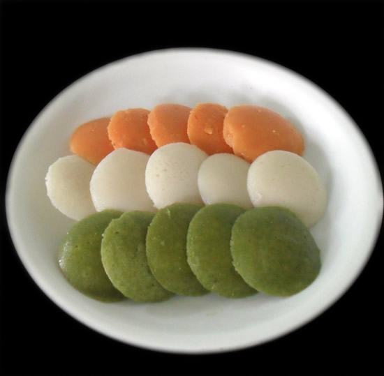

Tomato - 1 big
Red Chilies - 2
Cilantro/Mint - 1 cup
Green Chilly - 1
Cumin Seeds - 1/4 tsp
Take the required portion of the idli batter and divide it into three equal parts. Keep one part as such for the white color of the tiranga idli/dosa.
Chop the tomatoes into chunks.
Saute the tomatoes and red chilies for just a couple of minutes for the raw taste to go.
Cool it and grind it to a smooth paste.
Mix it with one portion of the batter to make the orange color of the tiranga idli/dosa.
Chop the cilantro (or mint leaves) roughly.
Saute it with the green chilies for just a couple of minutes to remove the raw flavor.
Cool it and grind it to a smooth paste.
Mix it with the third portion of the batter to make the green color of the tiranga idli/dosa.
You can make separate idlies with the three batters and arrange it in tri color as shown in the picture below.